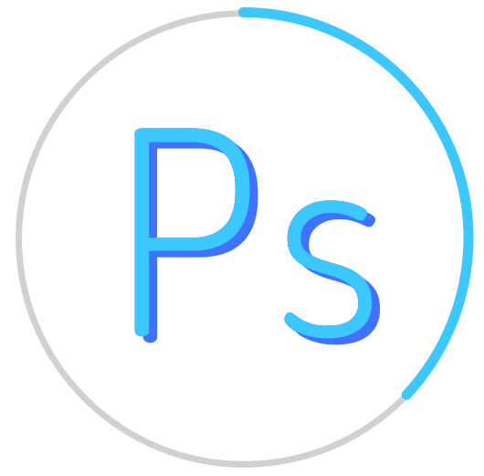

Works
作品

Profile
自己紹介
村松 茉子- Muramatsu Mako -
1997年12月11日生まれの24歳です。
就職する前は、アルバイトで5年間 飲食店のホールを担当し、年少の頃からピアノを10年以上続けるなど、
物事をコツコツと続ける力には自信があります。
2021年11月からWebデザイナーを目指し、コーディングとデザインの勉強を始めました。 興味のある事柄は、とことん突き詰めたくなるタイプの人間なので、就職後も勉強を続けて成長していきたいです。
デザインはオシャレであるだけでなく、見る側が「分かりやすい」ことが大切だと思っております。 「伝えること」を第一に、お客様のニーズにあったデザインを目指します。
経歴
2016年
2020年
2021年
2016年
高校を卒業、近畿大学農学部に入学
高校の頃に観た、深海魚を特集した番組をきっかけに、近畿大学農学部の水産学科に入学。また、在学中に友人との交流で、美術に興味を持ち、私生活でイラストの練習を始める。
2020年
大学を卒業、工場の品質管理に携わる
卒業後は菓子の餡を生産する工場に就職する。品質管理に所属し、製品検査、細菌検査などを担当する。
2021年
9月末に会社を退職、事業所でコーディング、デザインについて学ぶ
趣味である描画から、デザインに強い興味を持つ。デザインに携わる仕事がしたい、障害に理解のある職場で働きたい、という思いから、転職を決意。就労支援事業所でコーデイング、デザインを学び始める。
スキル
レスポンシブ対応を含めた基本的なコーディングができます。Javascript(Jquery)は、ハンバーガーメニューなど部分的に動かすような動作が可能です。Wordpressは、今までに3つほどサイトを模写で作成をしており、プラグインを使用したサイト作成ができます。
- 
デザイン関連の制作では主にPhotoshopを使用しており、一番使い慣れているソフトです。サイトデザインはもちろん、画像加工やバナー制作もできます。LPサイトの画像やバナーは、全てPhotoshopで作成いたしました。
ロゴ制作などに使用しております。こちらのアイコンもillustratorで作成しました。タイポグラフィやイラスト制作もできるように日々勉強中です。